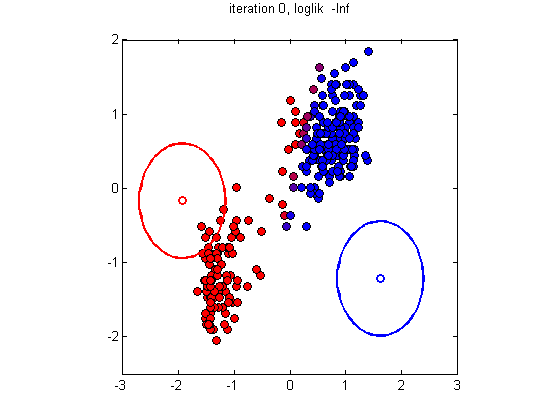
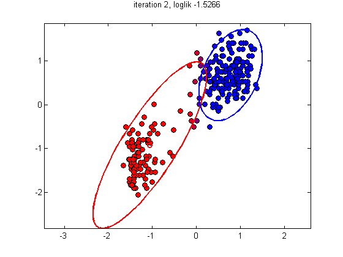
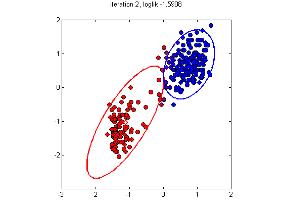
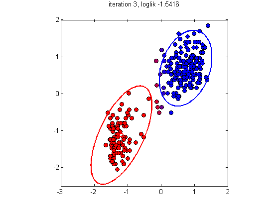
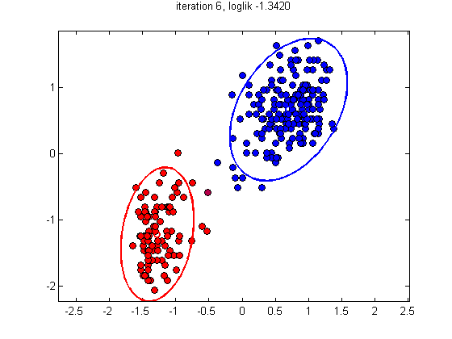
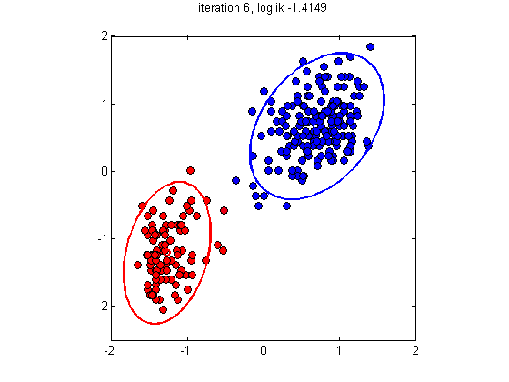

function mixGaussDemoFaithful
close all
setSeed(0);
K = 2;
X = load('faithful.txt');
X = standardizeCols(X);
mu = [-1.5 1.5; 1.5 -1.5]' + 1*randn(2,2);
Sigma = repmat(0.1*eye(2),[1 1 K]);
mixweight = normalize(ones(1,K));
[model, loglikHist] = mixGaussFitEm(X, K, ...
'maxIter', 10, 'plotfn', @plotfn,...
'mu', mu, 'Sigma', Sigma, 'mixweight', mixweight);
figure;
plot(loglikHist, 'o-', 'linewidth', 3)
xlabel('iter')
ylabel('average loglik')
end
function plotfn(X, mu, Sigma, mixweight, post, loglik, iter)
str = sprintf('iteration %d, loglik %5.4f\n', iter, loglik);
n = size(X, 1);
colors = [post(:,1), zeros(n, 1), post(:,2)];
figure; hold on;
for i=1:n
plot(X(i, 1), X(i, 2), 'o', 'MarkerSize', 6, 'MarkerFaceColor', colors(i, :), 'MarkerEdgeColor', 'k');
end
classColors = 'rb';
K = size(mu,2);
for k=1:K
gaussPlot2d(mu(:,k), Sigma(:,:,k), 'color', classColors(k));
plot(mu(1,k), mu(2,k),'o','linewidth',2, 'color', classColors(k));
end
title(str)
axis square
box on
set(gca, 'YTick', -2:2);
end
     